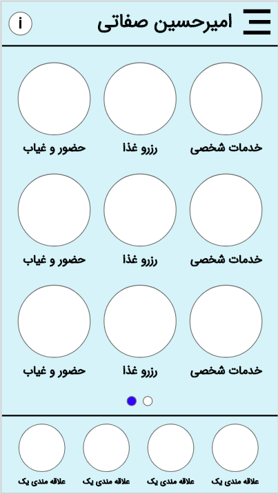
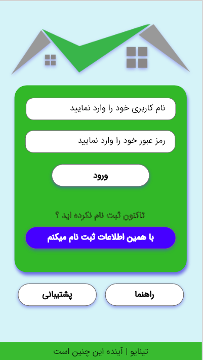
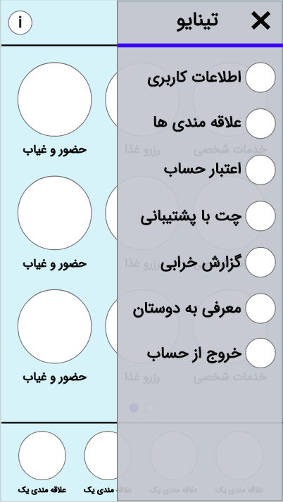

<html>
    <title>Tinaio AdobeXD Starter Prototype</title>
</html>

<body style="text-align: center; margin-top: 2%;">
    <h4 style="text-align:left; margin-left:15%"><a href="http://ahsefati.github.io/details.html"><- Back</a></h4>
    
    
    
    
</body>